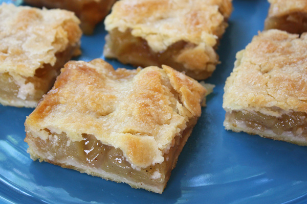

Apple Pie Bars

Description
If you love apple pie as much as I do, here is your apple pie fix that is easier and
and faster than a standard pie...but just as tasty.
Ingredients
Crust
- 1 2/3 cups all-purpose flour
- 1 tablespoon sugar
- 1/4 teaspoon salt
- 1/3 vegetable oil
- 1/3 cup milk - low fat or whole
Filling
- 1/2 cup sugar
- 1/4 teaspoon cinnamon
- 1/8 teaspoon nutmeg
- 1/8 teaspoon salt
- 2 tablespoons flour
- 8 cups Granny smith apples, peeled, colored and cut into 1 inch chunks
Step by Step Instructions
Crust
- Preheat oven to 375° F
- Combine flour, sugar, & salt in a bowl
- Add oil & milk all at once, stirring with a fork. By hand, divide dough in half and shape each half into a smooth mound
- Roll one mound between 2 sheets of floured wax paper to about an 8" square and set aside
- Between 2 more sheets of wax paper, roll the other mound into a 9-inch square and transfer to the bottom of an 8x8-inch
ungreased or parchment paper lined square pan, pressing some crust up the sides. (or you can press the mound of dough into the pan, by hand.)
Filling
- Combine sugar, spices, and flour or tapioca in a large bowl
- Add apples
- Place into pan and top with second crust. Patch if needed but a few openings are okay
- Brush with milk and sprinkle with 2 tsp. sugar. Poke about 9 holes in top crust with a sharp knife
- Bake about 50 minutes until top is golden. Cool. Cut into bars